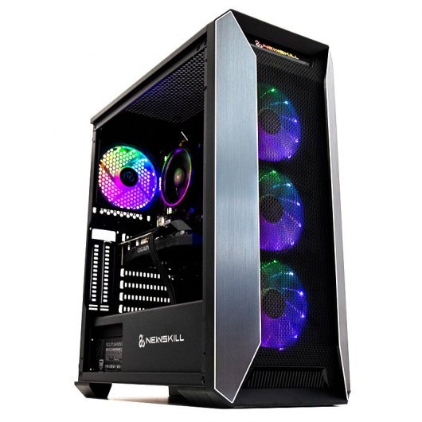
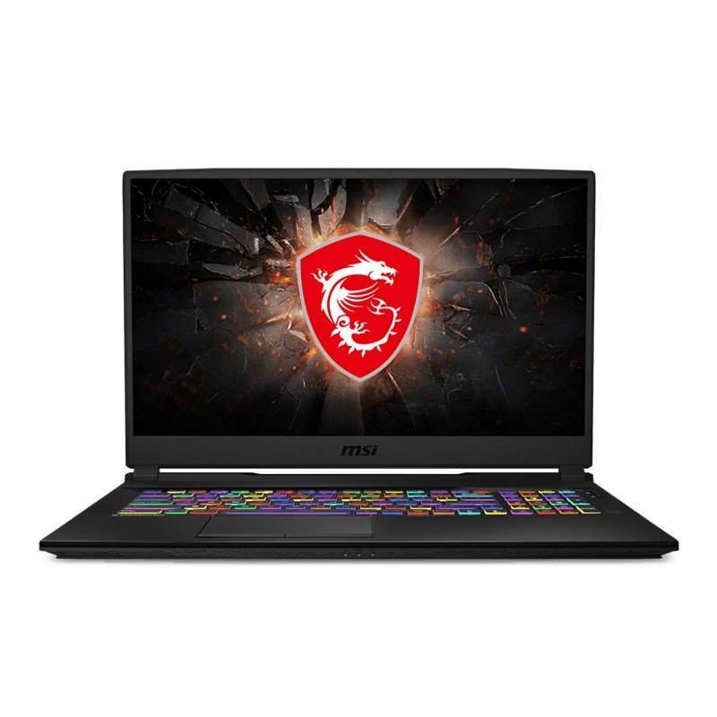
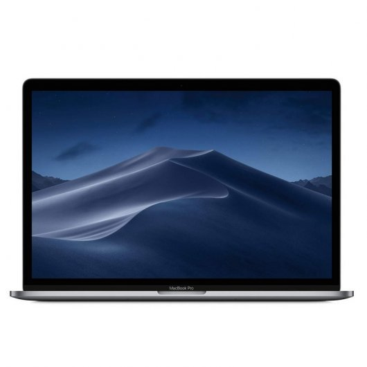

En nombre de "Gaming place", les damos la más sincera bienvenida a nuestra página web, en la que,
esperamos, encontrarán toda la información que necesiten acerca de nuestras actividades.
Publicaciones
Newskill Manticore Entry AMD Ryzen 5
Combo de periféricos definitivo. El ordenador gaming Manticore incluye en sus tres
modelos un set de periféricos gamer que te permitirán jugar a tus videojuegos favoritos.
Disfruta de un teclado con retroiluminación RGB con varios modos de iluminación y un software
personalizable para grabar macros.
Elimina a tus enemigos con un ratón gaming RGB que también incluye un software propio.
Aprovecha la polivalencia de los auriculares gamer con iluminación RGB y utilízalos también en tu
PS4, Xbox One, Nintendo Switch o Smartphone.
Y por último pero no menos importante, aumenta tu precisión y mantén tus periféricos pegados al
escritorio gracias a la alfombrilla de ratón XL incluida con Manticore.

Imagen de Newskill Manticore Entry AMD Ryzen 5
MSI GL75 Leopard 10SFK-060XES
MSI GL75 Leopard es un portátil equilibrado, con un buen rendimiento y estética, su chasis es de aluminio de gran calidad,
acompañado con su teclado Steel Series y multitud de características gaming, hacen de él un portátil perfecto para los iniciados en el gaming.

Imagen de MSI GL75 Leopard 10SFK-060XES
Apple MacBook Pro Intel Core i7 2.6GHz/16GB/256GB SSD/Radeon Pro 555X/15.4" Gris Espacial
Más potencia en el núcleo: MacBook Pro tiene una potencia de cálculo increíble gracias a los últimos procesadores Intel Core.
El modelo de 15 pulgadas incluye un Intel Core i9 de ocho núcleos de novena generación que alcanza velocidades Turbo Boost de hasta 5 GHz.
Eso se nota en apps para gráficos en 3D como Autodesk Maya, con velocidades de renderización un 40 % más rápidas que con el procesador de seis núcleos,
de la generación anterior y hasta el doble de rápidas que con un procesador de cuatro núcleos.

Imagen de Apple MacBook Pro
Apple iPhone XS Max 512Gb Dorado Libre
Presentamos el iPhone XS con dos tamaños de pantalla Super Retina, incluida la más grande que ha tenido nunca un iPhone. Face ID aún más rápido.
El chip más inteligente y con mayor potencia en un smartphone. Y un revolucionario sistema de cámara dual. Es todo lo que te gusta del iPhone.
Pero llevado al extremo.
Imagen de Apple iPhone XS Max 512Gb Dorado
Samsung Galaxy S20 Ultra 12/128GB 5G Cosmic Black Libre
Este es el smartphone que cambiará la fotografía. Descubre el nuevo Galaxy S20, S20+ y S20 Ultra.
Con la revolucionaria grabación de vídeo en calidad 8K que cambia la forma de grabar, no solo el vídeo,
sino también la fotografía y el 5G cambiaran la forma de compartir contenidos.